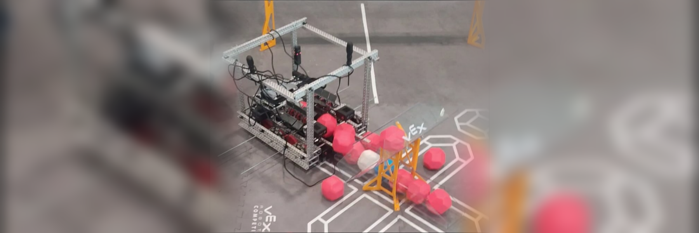

Project 3
Design and build a robot capable of completing the tasks established in the VEX 2024–2025 competition, where the robot had to score plastic rings on moving and fixed pegs, and also hang from a structure; the robot had to be controlled via remote control.
A robot was developed using components from the VEX system. The conceptual design of the mechanism was carried out, the chassis was assembled, and motors and electronics were integrated. The system was programmed to execute the functions required by the season challenge, achieving stable operation and being capable of scoring multiple rings on the targets.
Participation in robot construction, mechanical assembly, integration of electronic components, and functional testing.
The robot met the required functions, fulfilling the challenge objective.